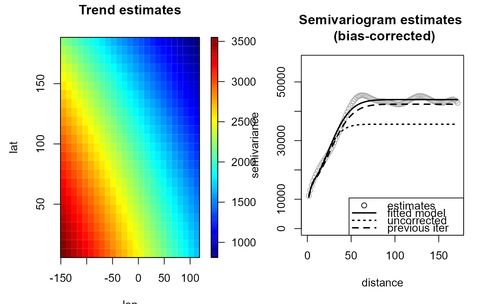
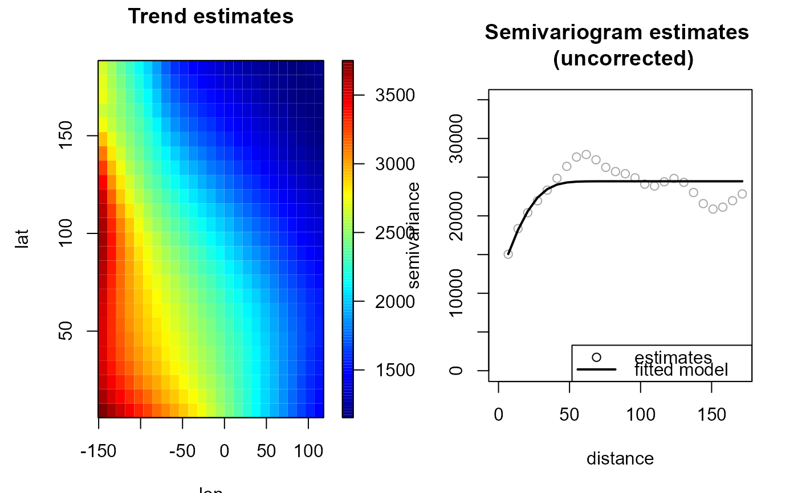
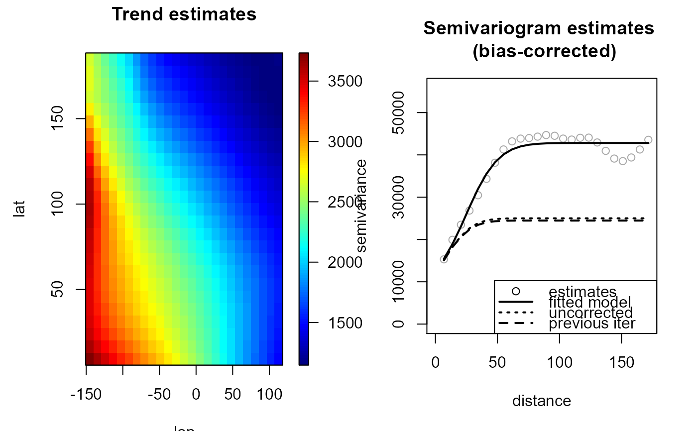

Fits a nonparametric (isotropic) geostatistical model
(jointly estimates the trend and the variogram) by calling
locpol, np.svariso.corr (or np.svariso ) and
fitsvar.sb.iso iteratively.
At each iteration, the trend estimation bandwith is updated
by a call to h.cv.
np.fitgeo(x, ...)
# S3 method for default
np.fitgeo(
x,
y,
nbin = NULL,
iter = 2,
h = NULL,
tol = 0.05,
set.NA = FALSE,
h.svar = NULL,
corr.svar = iter > 0,
maxlag = NULL,
nlags = NULL,
dk = 0,
svm.resid = FALSE,
hat.bin = corr.svar,
warn = FALSE,
plot = FALSE,
window = NULL,
...
)
# S3 method for locpol.bin
np.fitgeo(
x,
svm,
iter = 1,
tol = 0.05,
h.svar = svm$esv$locpol$h,
dk = 0,
corr.svar = TRUE,
svm.resid = FALSE,
hat.bin = corr.svar,
warn = FALSE,
plot = FALSE,
...
)
# S3 method for fitgeo
np.fitgeo(
x,
iter = 1,
tol = 0.05,
h.svar = x$svm$esv$locpol$h,
dk = x$svm$par$dk,
corr.svar = TRUE,
svm.resid = FALSE,
hat.bin = corr.svar,
warn = FALSE,
plot = FALSE,
...
)a (data) object used to select a method.
further arguments passed to h.cv
(trend bandwith selection parameters).
vector of data (response variable).
vector with the number of bins on each dimension.
maximum number of interations (of the whole algorithm).
initial bandwidth matrix for trend estimation
(final bandwith if iter = 1).
relative convergence tolerance (semivariogram).
logical. If TRUE, sets the bin averages corresponding
to cells without data to NA.
bandwidth matrix for variogram estimation.
logical; if TRUE (default), a bias-corrected semivariogram estimate
is computed (see np.svariso.corr).
If FALSE the (uncorrected) residual variogram is computed
(the traditional approach in geostatistics).
maximum lag. Defaults to 55% of largest lag.
number of lags. Defaults to 101.
dimension of the Shapiro-Botha variogram model (see fitsvar.sb.iso).
logical; if TRUE, the fitted (uncorrected) residual semivariogram model
is computed and returned (this parameter has no effect when corr.svar = FALSE).
logical; if TRUE, the hat matrix of the binned data is returned.
logical; sets the handling of warning messages in bandwith selection (h.cv).
logical; if TRUE, semivariogram estimates obtained at each iteration are plotted.
spatial window (values outside this window will be masked), currently an sp-object of class
extending SpatialPolygons.
(fitted) variogram model (object of class
fitsvar or svarmod).
Returns an object of class
fitgeo
(extends np.geo). A locpol.bin object
with the additional (some optional) 3 components:
Currently, only isotropic semivariogram estimation is supported.
If parameter h is not specified,
h.cv is called with the default values (modified CV) to set it.
If parameter h.svar is not specified,
is set to 1.5*h.cv.svar.bin()$h.
Setting corr.svar = TRUE may be very slow (and memory demanding) when the number of data is large
(note also that the bias in the residual variogram decreases when the sample size increases).
geomod <- np.fitgeo(aquifer[,1:2], aquifer$head, svm.resid = TRUE)
plot(geomod)

# Uncorrected variogram estimator
geomod0 <- np.fitgeo(aquifer[,1:2], aquifer$head, iter = 1, corr.svar = FALSE)
plot(geomod0)

# Additional iteration with bias-corrected variogram estimator
geomod1 <- np.fitgeo(geomod0, corr.svar = TRUE, svm.resid = TRUE)
plot(geomod1)
